The whole Syros-to-Mykonos corridor of the Aegean, read through every kind of satellite imagery Google Earth Engine can offer — optical, infrared, radar, elevation, land cover and more. Each type below comes with a live preview of this exact stretch of sea and islands, and a plain-language note on what an architect or planner can build from it.
整段從錫羅斯（Syros）到米科諾斯（Mykonos）的愛琴海走廊，透過 Google Earth Engine 所能提供的各類衛星影像來解讀——光學、紅外、雷達、高程、土地覆蓋等。 以下每一種影像都附有這片海域與島嶼的實際預覽，以及一段淺白說明： 建築師或規劃者能從中衍生出什麼。
What this is 這是什麼
Google Earth Engine (GEE) is a planetary-scale archive of satellite imagery with a computing engine attached. Instead of hunting for and downloading scenes, you query a catalogue — decades of imagery, ready to analyse. For the box drawn around Syros, Rineia, Delos, southern Tinos and Mykonos (≈ 1,570 km², about 87% sea) the archive holds thousands of scenes, going back to 1984. Everything on this page was generated live from that catalogue.
Google Earth Engine（GEE）是一座行星尺度的衛星影像資料庫，並內建運算引擎。 你不必逐一搜尋、下載影像，而是直接查詢一個目錄——涵蓋數十年、隨時可分析的影像。 針對圍繞錫羅斯、里尼亞（Rineia）、提洛（Delos）、提諾斯南部與米科諾斯所畫出的範圍 （約 1,570 平方公里，其中約 87% 為海洋），資料庫收藏了數千幅影像，最早可追溯至 1984 年。 本頁所有內容皆由該目錄即時產生。
Every imagery type, previewed 各類影像預覽
Fourteen data types, each shown over the same corridor. 十四種資料類型，皆呈現於同一走廊之上。
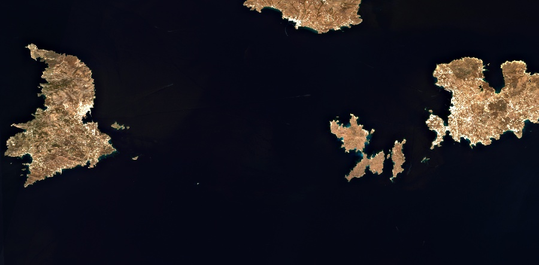
1 True colour 真彩色
Sentinel-2 · 10 m · 2015–now · 2,177 scenes
Shows — the islands as the eye sees them: sea, bare hillsides, green valleys, white towns.
顯示 — 以人眼所見呈現島嶼：海洋、裸露山坡、綠色谷地、白色聚落。
Derive — base maps, coastline tracing, visual site context, a true-colour backdrop for any plan.
可衍生 — 底圖、海岸線描繪、基地視覺脈絡、任何規劃圖的真彩底圖。
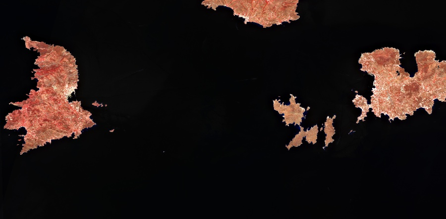
2 Colour-infrared 假色紅外
Sentinel-2 · 10 m · near-infrared
Shows — near-infrared as red. Healthy vegetation glows bright red; rock and buildings stay grey-brown.
顯示 — 將近紅外光顯示為紅色。健康植被呈鮮紅，岩石與建物則為灰褐。
Derive — vegetation vigour, green vs dry land, crop vs scrub, tree cover.
可衍生 — 植被活力、綠地與旱地之分、作物與灌叢、樹木覆蓋。
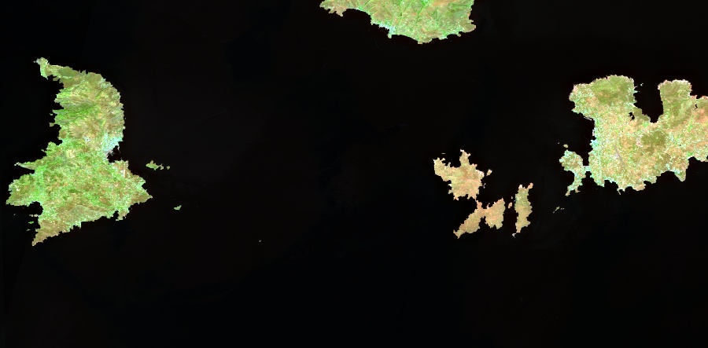
3 Short-wave infrared 短波紅外（地質）
Sentinel-2 · 20 m · SWIR bands
Shows — bands sensitive to rock, soil and moisture — lithology and dryness the eye can't see.
顯示 — 對岩石、土壤、水分敏感的波段——揭示肉眼看不到的岩性與乾濕。
Derive — geology and rock-type hints, soil moisture, burn scars, bare-ground mapping.
可衍生 — 地質岩性線索、土壤水分、火燒痕跡、裸地製圖。
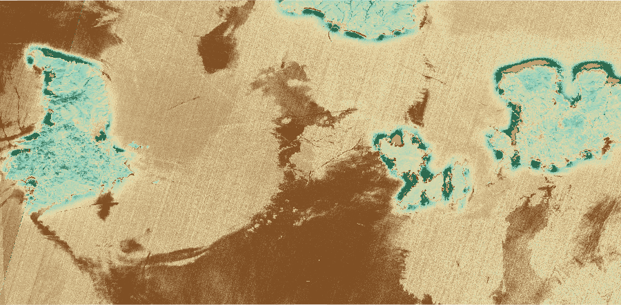
4 NDVI — vegetation 植生指數
derived from Sentinel-2 · 10 m
Shows — one number for greenness per pixel — brown is bare, green is vigorous.
顯示 — 每個像元的綠度單一指數——褐色為裸地，綠色為茂盛。
Derive — biomass, green-space and farming maps, drought stress, seasonal phenology.
可衍生 — 生物量、綠地與農業製圖、乾旱脅迫、季節物候。
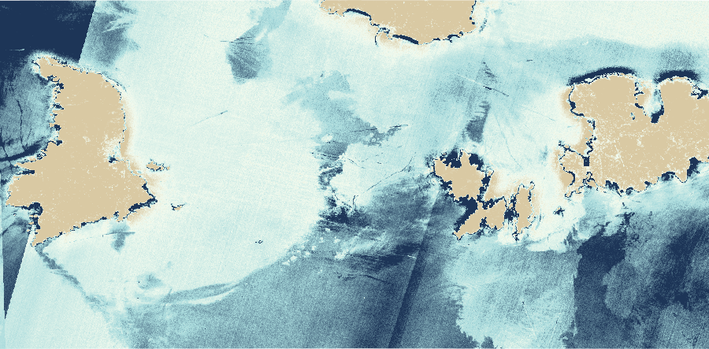
5 NDWI — water 水體指數
derived from Sentinel-2 · 10 m
Shows — highlights water and moisture — a precise land/sea edge and any wet ground.
顯示 — 突顯水體與水分——精確的陸海邊界及潮濕地面。
Derive — coastline extraction, wetlands, cisterns and reservoirs, flood extent, shoreline change.
可衍生 — 海岸線萃取、濕地、蓄水池與水庫、洪水範圍、岸線變遷。
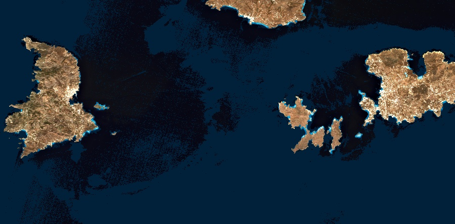
6 Bathymetry 衛星水深（實驗性）
derived from Sentinel-2 · shallow water only
Shows — relative depth of the shallow shelf from blue/green light — the glowing rims around coasts.
顯示 — 由藍綠光推估的淺海陸棚相對水深——海岸周圍發亮的邊緣。
Derive — shallow seabed depth, reefs and seagrass, beach and harbour context. Deep water saturates — shallow, clear water only.
可衍生 — 淺海海床深度、礁石與海草、海灘與港灣脈絡。深水會飽和失效，僅適用清澈淺水。
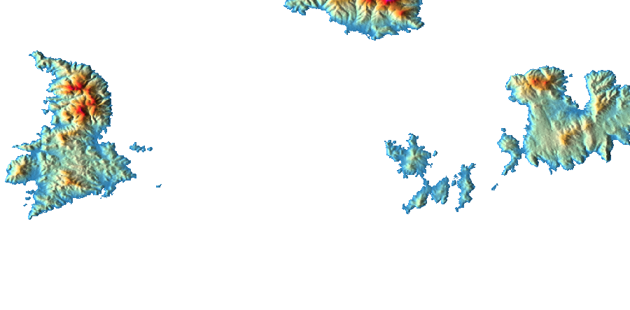
7 Elevation relief 高程地勢暈渲
SRTM · 30 m · to 468 m a.s.l.
Shows — terrain height as colour (blue low → red high) over hill-shading — a physical relief model.
顯示 — 以顏色表示地形高度（藍低→紅高）並加陰影暈渲——如同實體地勢模型。
Derive — 3-D terrain, viewsheds, drainage basins, cut-and-fill, sun-and-shadow studies.
可衍生 — 三維地形、視域分析、集水區、填挖方、日照陰影研究。
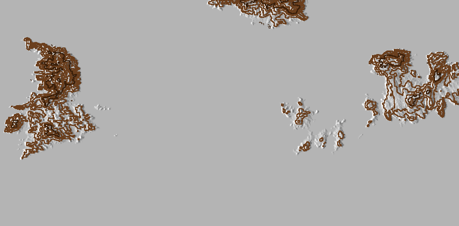
8 Contour map 等高線地形圖
derived from SRTM · 50 m interval
Shows — classic topographic iso-lines every 50 m (bold every 200 m) over hill-shade.
顯示 — 經典地形等高線，每 50 公尺一條（每 200 公尺加粗），疊於陰影暈渲上。
Derive — topographic base maps, reading slope and landform, site sections and grading plans.
可衍生 — 地形底圖、判讀坡度與地貌、基地剖面與整地計畫。
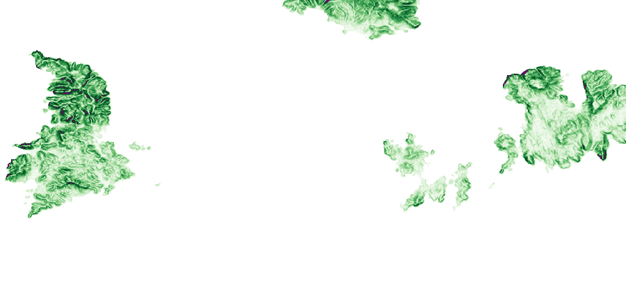
9 Slope 坡度
derived from SRTM · 30 m · degrees
Shows — how steep each pixel is — flat ground pale, cliffs dark.
顯示 — 每個像元的陡峭程度——平地淺色，陡崖深色。
Derive — buildable-land analysis, landslide/erosion risk, road and terrace siting, solar-panel tilt.
可衍生 — 可建用地分析、山崩沖蝕風險、道路與梯田選址、太陽能板傾角。
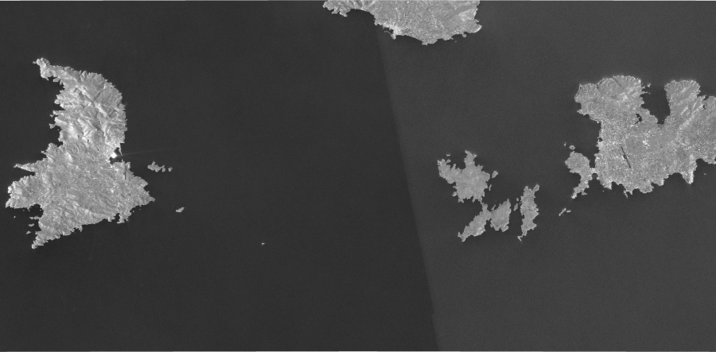
10 Radar (SAR) 合成孔徑雷達
Sentinel-1 · 10 m · 2014–now · all-weather
Shows — microwave backscatter — sees through cloud and at night; rough land bright, calm sea black.
顯示 — 微波後向散射——可穿透雲層並夜間成像；粗糙陸地明亮，平靜海面漆黑。
Derive — all-weather coastline, ship and wake detection, surface roughness, and (with InSAR) millimetre ground motion.
可衍生 — 全天候海岸線、船隻與尾流偵測、地表粗糙度，並可（以 InSAR）量測毫米級地表位移。
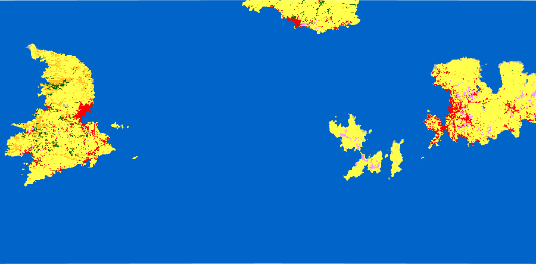
11 Land cover 土地覆蓋分類
ESA WorldCover · 10 m · 2020–21
Shows — every pixel classified: built-up (red), grass/scrub (yellow), cropland (pink), trees (green), water (blue).
顯示 — 每個像元皆分類：建成區（紅）、草地灌叢（黃）、農地（粉）、樹木（綠）、水體（藍）。
Derive — land-use statistics, built vs natural area, settlement footprints, planning baselines, change over time.
可衍生 — 土地利用統計、建成與自然面積、聚落範圍、規劃基線、時序變遷。
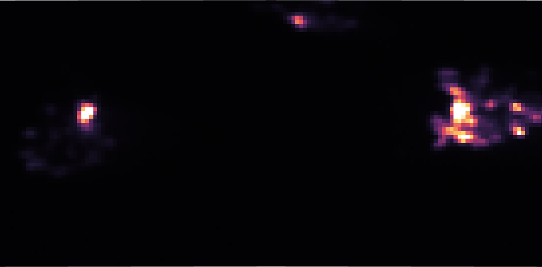
12 Night lights 夜間燈光
VIIRS · ~750 m · 2012–now
Shows — how brightly each place glows at night — a proxy for settlement and activity.
顯示 — 各地夜間發光強度——聚落與活動的替代指標。
Derive — settlement mapping, tourist-season pulse, electrification, growth trends, light-pollution studies.
可衍生 — 聚落製圖、旅遊季脈動、電氣化、成長趨勢、光害研究。
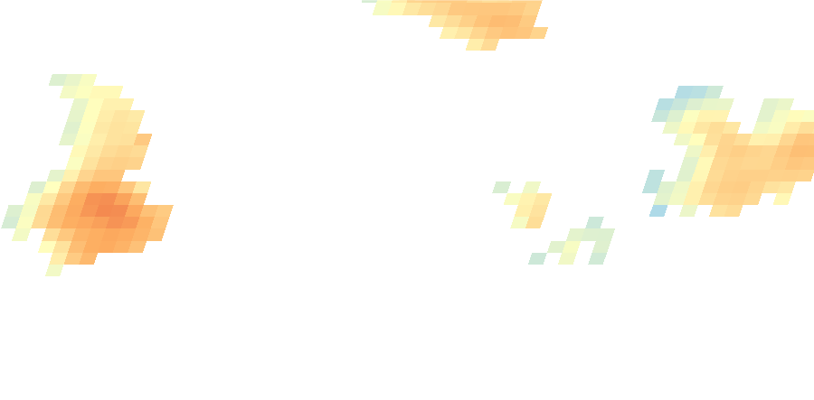
13 Surface temperature 地表溫度
MODIS · 1 km · thermal (coarse)
Shows — skin temperature of the ground (land only, blocky 1 km pixels) — summer islands run hot.
顯示 — 地表表層溫度（僅陸地、1 公里方格）——夏季島嶼相當炎熱。
Derive — urban heat islands, heat-exposure and microclimate screening, thermal-comfort context.
可衍生 — 都市熱島、熱暴露與微氣候初篩、熱舒適脈絡。
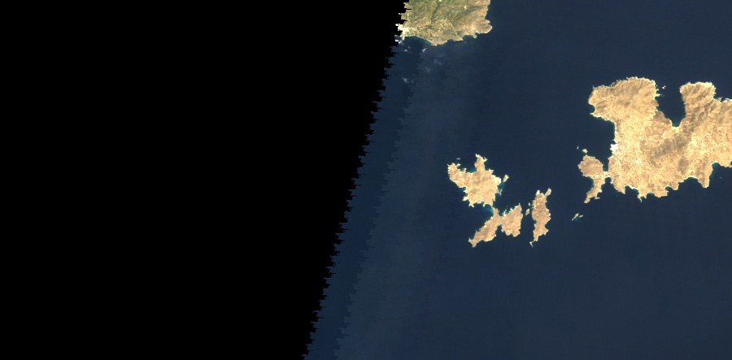
14 Historical (1990) 歷史影像
Landsat-5 · 30 m · archive from 1984
Shows — the same corridor around 1990, from the four-decade Landsat archive.
顯示 — 約 1990 年的同一走廊，取自長達四十年的 Landsat 檔案。
Derive — change detection — coastline shift, settlement and tourism growth, vegetation change over 40 years.
可衍生 — 變遷偵測——海岸線位移、聚落與旅遊成長、四十年植被變化。
Elevation & cross-sections 高程與地形剖面
The two islands are the summits of a drowned mountain landscape. Below: the contour map, then true elevation profiles cut straight through the terrain.
這兩座島是一片沉沒山地的山峰。以下為等高線地形圖，以及直接穿過地形所切出的真實高程剖面。
West–East section: Syros → open Aegean → Mykonos 東西向剖面：錫羅斯 → 愛琴海峽 → 米科諾斯
Vertical scale exaggerated ~30× (47.7 km wide, ~215 m tall) so the relief is legible. 垂直比例放大約 30 倍（寬 47.7 公里、高約 215 公尺）以利判讀。
North–South section across Syros 錫羅斯南北向剖面
The Ano Syros massif rises to ~215 m along this line (island peaks reach 442 m elsewhere). 沿此線上錫羅斯山地升至約 215 公尺（島上他處山峰達 442 公尺）。
Per-island close-ups 各島特寫
Full-detail 10 m Sentinel-2, cropped island by island. 逐島裁切的 10 公尺 Sentinel-2 全細節影像。
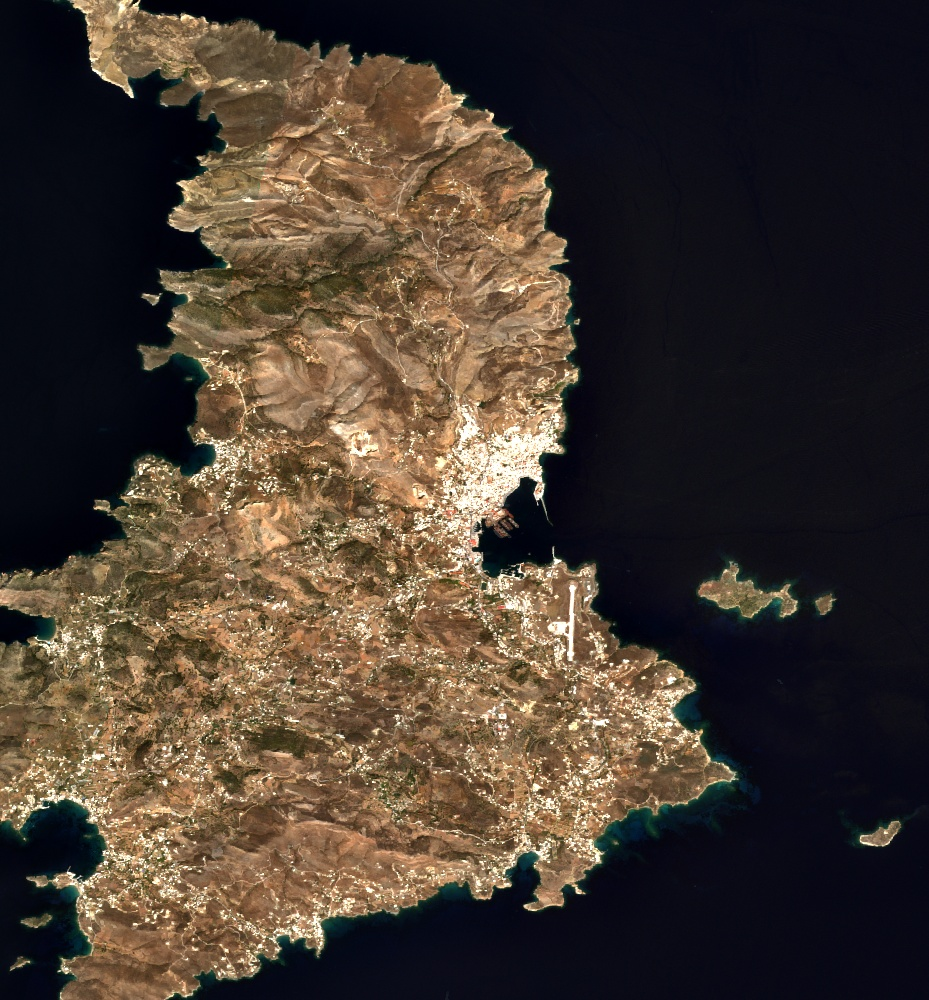
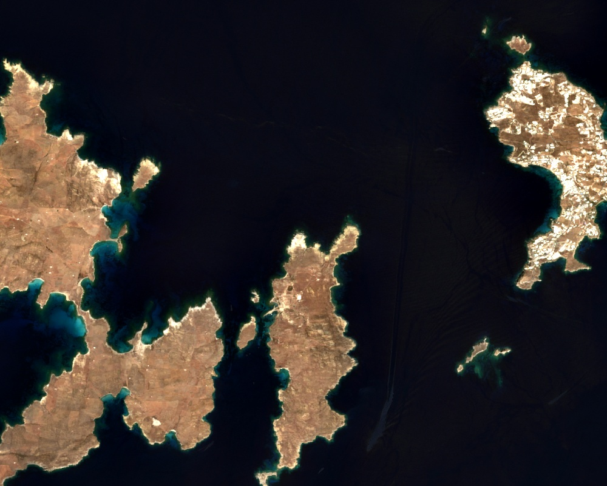
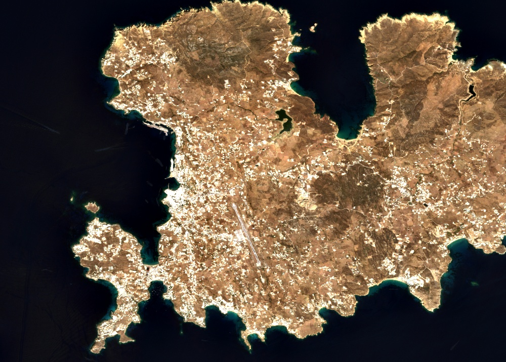
Change over time · 1985 → 2024 歷時變遷
Forty years of cloud-free Landsat, one frame per five years. Watch the settlements around Ermoupoli and Mykonos Chora spread as tourism grows.
四十年的無雲 Landsat 影像，每五年一格。可見隨旅遊業成長，埃爾穆波利與米科諾斯荷拉周邊的聚落不斷擴張。
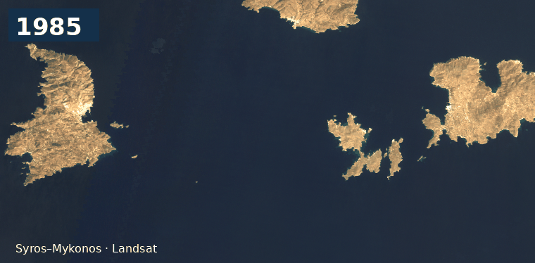
What the archive holds here 此地資料庫存量
| Dataset | Resolution | Scenes here | Span |
|---|---|---|---|
| Sentinel-2 (optical) | 10 m | 2,177 | 2015 → now |
| Sentinel-1 (radar) | 10 m | 1,839 | 2014 → now |
| Landsat 5→9 | 30 m | 2,500+ | 1984 → now |
| ESA WorldCover | 10 m | 2 epochs | 2020, 2021 |
| Dynamic World LULC | 10 m | 1,738 | 2015 → now |
| SRTM / Copernicus / ALOS DEM | 30 m | — | static |
| VIIRS night lights | ~750 m | 148 mo. | 2014 → now |
| ERA5-Land climate | ~9 km | 27,900+ | 1950 → now |
誠實的限制：免費目錄的最高解析度為 10 公尺（Sentinel-2）——不含次公尺級商業影像（Planet、Maxar）。 亦無原生高解析水深或光達地形；本頁兩者皆為衍生（水深來自 Sentinel-2，地形來自 30 公尺 DEM）。 海色與海溫圖層雖存在，但解析度過粗（1–25 公里），無法解析島嶼間的海峽。
Download the data 下載原始資料
Full-resolution, georeferenced GeoTIFFs (EPSG:4326) — open them in QGIS, ArcGIS, Rhino/Grasshopper, Blender GIS or any GIS. The Sentinel-2 files carry four analysis-ready bands (B2 blue, B3 green, B4 red, B8 near-infrared) so you can recompute NDVI, coastline or your own composites.
全解析度、含地理座標的 GeoTIFF（EPSG:4326）——可於 QGIS、ArcGIS、Rhino/Grasshopper、Blender GIS 或任何 GIS 開啟。Sentinel-2 檔案含四個可供分析的波段（B2 藍、B3 綠、B4 紅、B8 近紅外）， 可自行重算 NDVI、海岸線或其他合成影像。
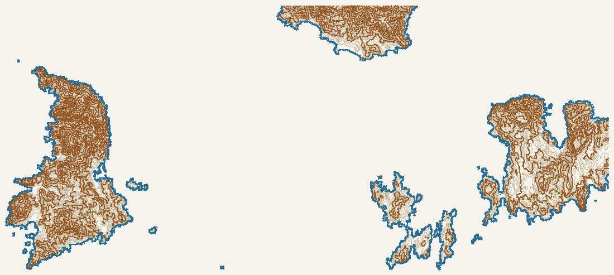
COAST (0 m), CONTOUR, CONTOUR_INDEX, CONTOUR_LABELS.
In Civil 3D, build a surface from the contours, then Profile / Section along any cut line you draw;
in plain AutoCAD the 3D contours give you the shape to section by hand.
Source DEM: Copernicus GLO-30 (≈30 m — the best free terrain for Greece).
供 CAD 使用的等高線。此 DXF 含 10 公尺間距（50 公尺加粗）的向量等高線，座標為 UTM 35N（公尺），每條線皆帶真實高程。 圖層：
COAST（0 公尺）、CONTOUR、CONTOUR_INDEX、CONTOUR_LABELS。
於 Civil 3D 可由等高線建立曲面，再沿任意切線產生剖面；一般 AutoCAD 則可依 3D 等高線手動切剖面。
來源 DEM：Copernicus GLO-30（約 30 公尺，希臘可用的最佳免費地形資料）。
How this page was made 本頁如何製作
Every image was rendered live from Google Earth Engine over the box
24.85–25.42°E, 37.28–37.56°N, using cloud-free composites of the clearest
Sentinel-2 scenes (and, where noted, Sentinel-1, Landsat, SRTM, ESA WorldCover, VIIRS and MODIS).
The contour lines, slope, indices, bathymetry and elevation sections are all computed from that raw imagery.
每一幅影像皆由 Google Earth Engine 針對範圍 24.85–25.42°E, 37.28–37.56°N 即時產生，
使用最清晰的 Sentinel-2 無雲合成影像（並在標註處使用 Sentinel-1、Landsat、SRTM、ESA WorldCover、VIIRS 與 MODIS）。
等高線、坡度、各項指數、水深與高程剖面，皆由該原始影像運算而得。